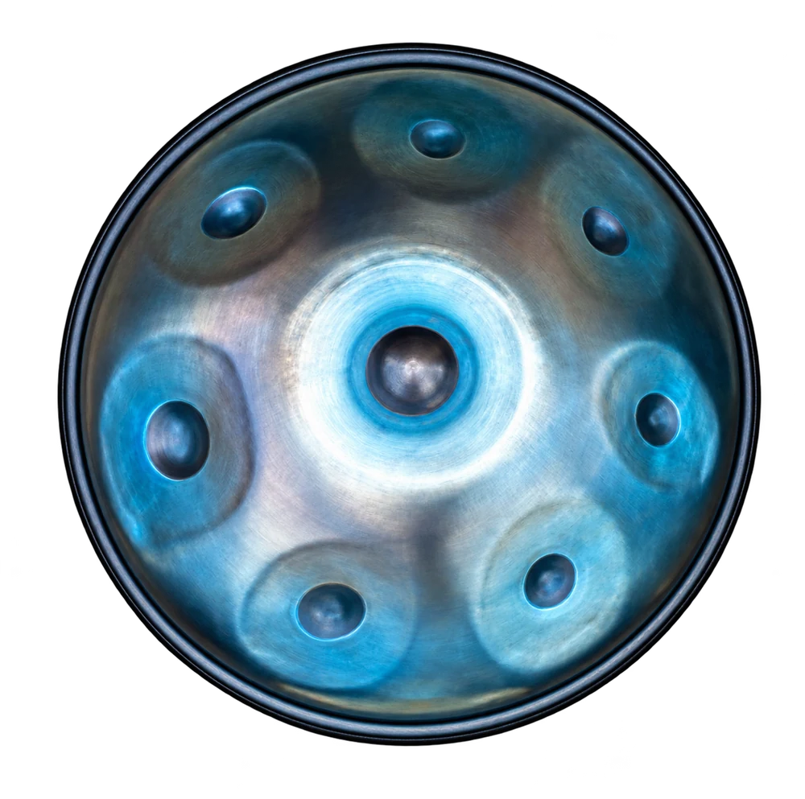

جایی برای تمرین
گام ساز معمولاً ثابت است؛ تمرین بر اساس نتهای همان مدل انجام میشود. برای نگهداری سطح فلز، دستور سازنده را رعایت کن.
ملودی در امتداد ضربه
هندپن سازی فلزی با ناحیههای کوکشده است که با ضربه ملایم دست به صدا درمیآید. برخلاف یک طبل بدون کوک مشخص، هر ناحیه نت معینی دارد. «هنگ» نام ساز مشخصی از PANArt است؛ همه هندپنها همان مدل یا همان سازنده نیستند.

طنین زنگدار و امتداد صدا، ترکیب ملودی و الگوی ریتمیک را ممکن میکند. تعداد نتها، گام و کیفیت کوک در سازهای مختلف متفاوت است.
انتخاب ساز از علاقه و تجربه آغاز میشود. برای تصمیم نهایی، ساز را از نزدیک امتحان کن و با مدرس دربارهٔ شرایط تمرینت حرف بزن.
ترتیب و سرعت آموزش با تجربه، تمرین و برنامهٔ استاد تنظیم میشود.
گام ساز معمولاً ثابت است؛ تمرین بر اساس نتهای همان مدل انجام میشود. برای نگهداری سطح فلز، دستور سازنده را رعایت کن.
گام، تعداد نت، دقت کوک، تداخل طنین و خدمات بازکوک را با استاد بررسی کن. صدای یک ویدئو بهتنهایی معیار خرید نیست.
پیش از خرید ساز، نظر استاد را بپرس.گستره نتهای هر مدل محدود است؛ امکان اجرای قطعه به گام و نتهای در دسترس بستگی دارد.
نه؛ هنگ نام ساز PANArt است و هندپن به خانواده گستردهتری اشاره میکند.
با هزارآوا علاقههایت را مرور کن و تجربهٔ ریتم و شنوایی را امتحان کن.
آشنایی با هزارآوا ✦عکس: Chris Hooper (AoxoA-Creative) · تصویر اصلی · CC BY-SA 4.0 · نسخهٔ بهینهشده و بدون پسزمینه.